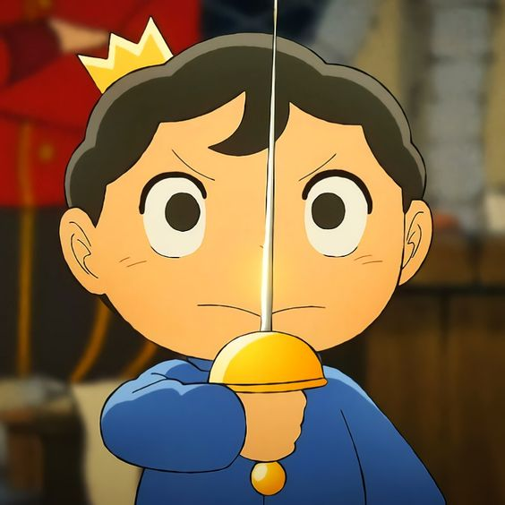

Bruno Rocha Pratti
22 anos
Engenheiro de Controle e Automação


Conheça um pouco sobre mim
Sou um estudante de engenharia apaixonado por tecnologias e desenvolvimento. Sonho em um dia poder trabalhar com desenvolvimento de software e Inteligência Artificial, duas áreas que tenho enorme admiração. Atualmente estágio na ArcelorMittal Tubarão, onde tive a primeira oportunidade com IA e agora estudo Angular para ajudar no desenvolvimento de novos projetos. Nos tempos livres gosto de jogar e assistir uma série, também gosto de brincar com minha irmã Alice e minha cachorrinha Lili. Meu maior objetivo atualmente é um dia poder trabalhar com desenvolvimento, dentro e fora do Brasil.